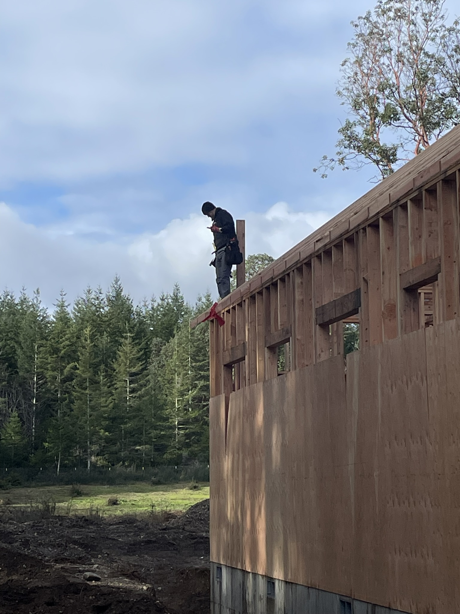

Built on community values
The people behind the work matter.
Jennifer, born and raised in Shelton and recognized as a Top 40 Under 40 business owner, brings entrepreneurial leadership and a client-focused vision to every project.
Joseph, raised in Seattle with years of hands-on construction experience, is a licensed septic specialist known locally for precision, integrity, and attention to detail. Together, they are committed to dependable service, clear communication, and exceptional results from start to finish.


Why homeowners choose F&S
Craftsmanship with a straightforward process.
Tailored solutions
Every project is planned around the property, budget, and homeowner goals.
Skilled craft
Hands-on building experience shows up in the structure and the finish details.
Clear communication
F&S keeps the path understandable from estimate to final walkthrough.
Local trust
A Shelton-based company serving Mason County neighbors with pride.
What F&S stands for
Clean work, practical answers, and finished projects that last.
F&S is a useful fit when you need one accountable team to think about the whole property: structure, exterior protection, septic function, maintenance needs, and the way a project affects daily life while work is underway.